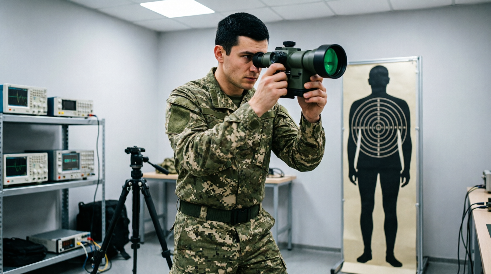
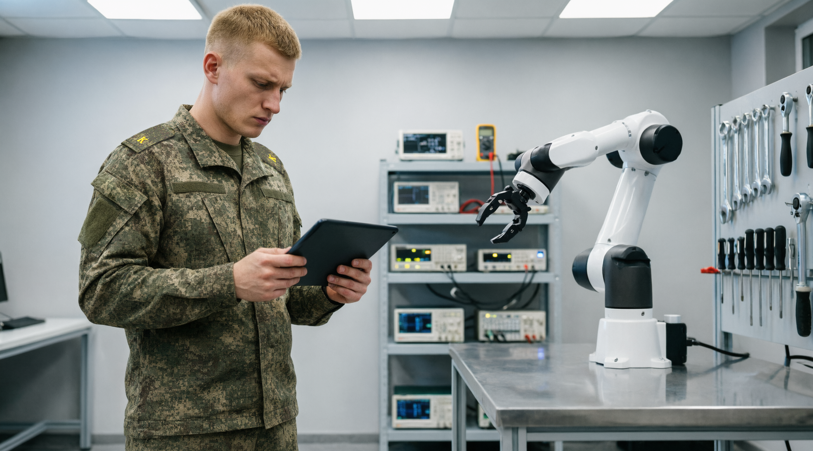

01Техническое обеспечение робототехнических систем и мехатронных устройств

02Обслуживание и ремонт оптических и оптико-электронных приборов и систем

03Техническое обеспечение робототехнических систем и мехатронных устройств
КАТАЛОГ / 2026
Профессии будущего
Новые и перспективные военные профессии (специальности) по подготовке военных специалистов РТО и АртТО
01Инженер-мехатроникСПЕЦИАЛИЗАЦИЯ
Техник
Разработка, проектирование, настройка и обслуживание интеллектуальных технических комплексов,
объединяющих механические узлы, электронику, приводы и программное управление.
КЛЮЧЕВЫЕ ЗАДАЧИ
Разработка технических заданий и технико-экономических обоснований проектов новых и модернизируемых робототехнических и мехатронных модулей для систем наведения, заряжания и стабилизации вооружения
Объединение механических узлов с электроникой и программным обеспечением, их наладка
Расчет и проектирование мехатронных модулей в соответствии с техническим заданием
Математическое моделирование мехатронных систем, роботов и их модулей с применением специализированных ПО
Организация и проведение экспериментов на действующих объектах и макетах, обработка результатов с применением современных информационных технологий
Проведение испытаний разработанных и изготовленных образцов, а также обоснование мер по обеспечению безопасности их эксплуатации
02Инженер-мехатроникСПЕЦИАЛИЗАЦИЯ
Программист
Разработка, проектирование, настройка и обслуживание интеллектуальных технических комплексов,
объединяющих механические узлы, электронику, приводы и программное управление.
КЛЮЧЕВЫЕ ЗАДАЧИ
Разработка технических заданий и технико-экономических обоснований проектов новых и модернизируемых робототехнических и мехатронных модулей для систем наведения, заряжания и стабилизации вооружения
Расчет и проектирование управляющих, информационно – сенсорных и исполнительных подсистем
Разработка алгоритмического и программного обеспечения средств и систем автоматизации и управления
Математическое моделирование мехатронных систем, роботов и их модулей с применением специализированных ПО
Организация и проведение экспериментов на действующих объектах и макетах, обработка результатов с применением современных информационных технологий
Проведение испытаний разработанных и изготовленных образцов, а также обоснование мер по обеспечению безопасности их эксплуатации
03СПЕЦИАЛИЗАЦИЯ
Инженер-оптотехник
Обслуживание и ремонт роботизированных комплексов с техническим (машинным) зрением.
КЛЮЧЕВЫЕ ЗАДАЧИ
Калибровка оптики после перегрузок, расчеты матрицы поправочных коэффициентов (для температуры, давления) и загрузка их в бортовой ПК
Перепрошивка библиотек образов целей, корректировка параметров порога обнаружения целей
Адаптация системы под местность, замена фильтрации помех в коде
Замена и юстировка вышедших из строя модулей (камер, плат и тд.)
Чистка и замена окон лазерных/оптических датчиков
Ремонт системы охлаждения матриц (замена хладагентов, проверка герметичности) в целях недопущения перегрева высокочувствительных датчиков в бою
АТЛАС / 2026
ТЕХНОЛОГИИ ЛИДЕРСТВО ИННОВАЦИИ
Профессии будущего начинаются с людей, готовых соединять знания,
ответственность и любовь к Родине.